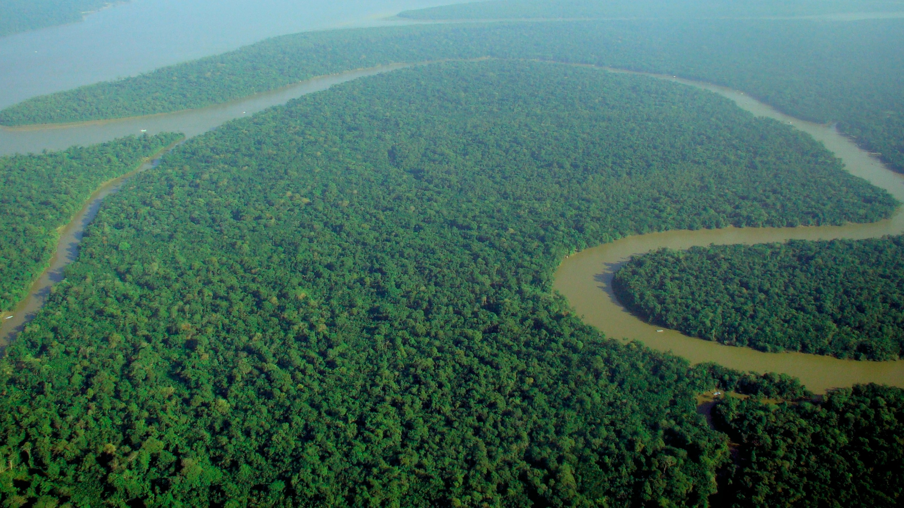
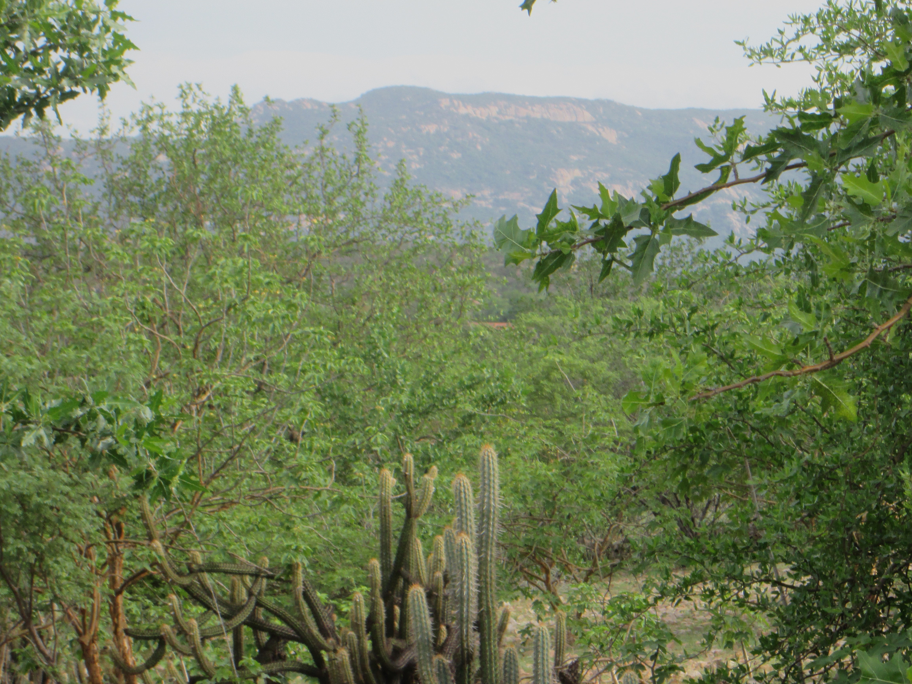
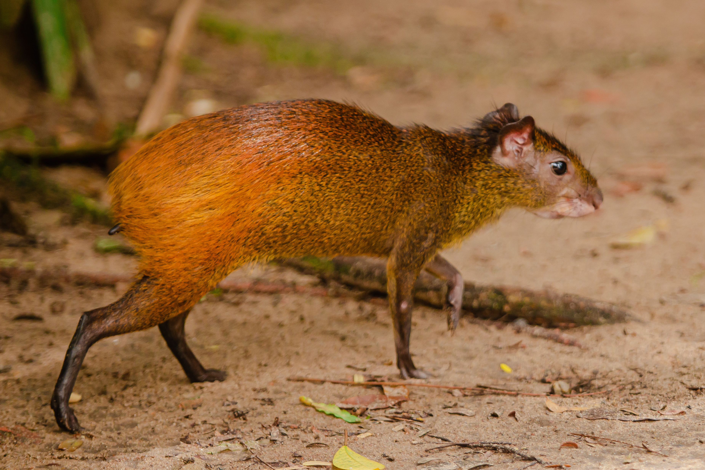
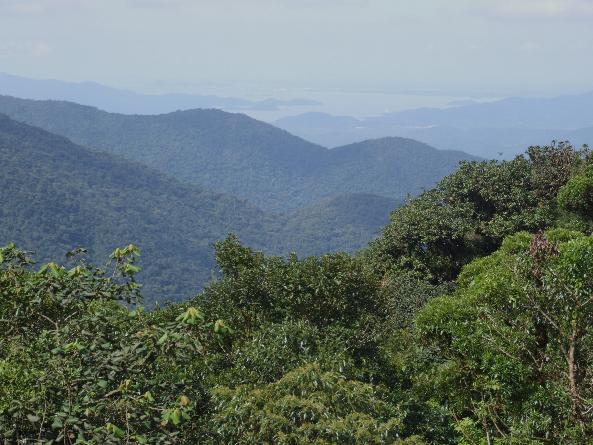
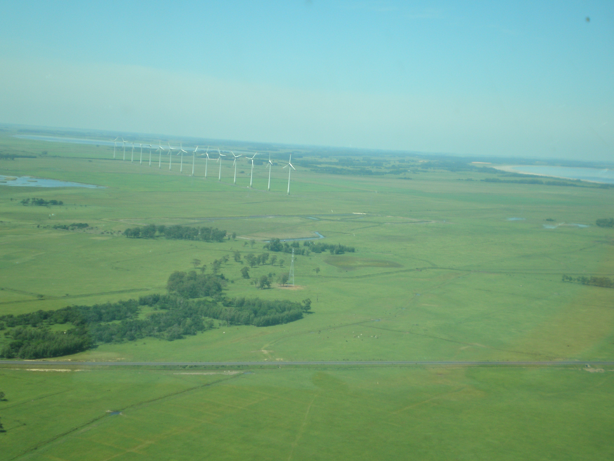
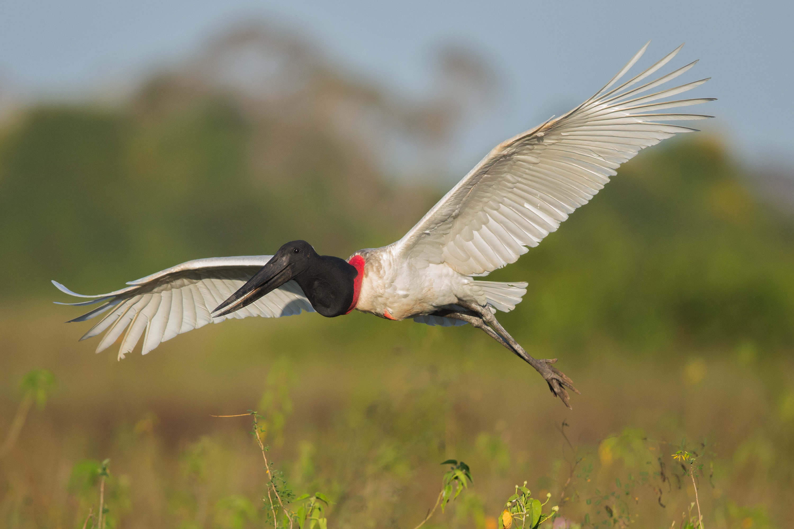

O mapa acima possui informações sobre as mais recentes queimadas que afetam diversos países e, mais notoriamente, o território brasileiro, exibindo também a área das espécies que habitam os 6 biomas brasileiros.
Biomas Brasileiros
A Amazônia é o maior bioma tropical do mundo, abrangendo cerca de 7 milhões de quilômetros quadrados na América do Sul, incluindo nove países. É conhecida por sua biodiversidade excepcional, abrigando aproximadamente 10% de todas as espécies conhecidas no planeta.
Suas características incluem uma densa floresta tropical, com uma diversidade impressionante de árvores, plantas, animais e micro-organismos. A Amazônia desempenha um papel vital na regulação do clima global, absorvendo grandes quantidades de dióxido de carbono e liberando oxigênio.
Além disso, a Amazônia é lar de muitas comunidades indígenas, cujas culturas e modos de vida estão profundamente ligados à floresta. No entanto, enfrenta ameaças significativas, como o desmatamento, a mineração ilegal, a expansão agrícola e as mudanças climáticas, que impactam não apenas a biodiversidade, mas também as comunidades locais e o equilíbrio ambiental global.

No entanto, a Amazônia enfrenta ameaças significativas, incluindo o desmatamento, a mineração ilegal, a expansão agrícola e os incêndios florestais, que têm impactos devastadores na biodiversidade, nos serviços ecossistêmicos e nas comunidades locais. A preservação da Amazônia é essencial não apenas para proteger sua rica biodiversidade, mas também para garantir a estabilidade climática e o bem-estar das populações que dependem desse ecossistema vital.
Arara-azul
A arara-azul-grande (Anodorhynchus hyacinthinus) é a maior espécie de arara (tribo dos arinos, Arini) da família dos psitacídeos (Psittacidae). É nativa do centro e leste da América do Sul, onde ocorre na Bolívia, no Paraguai e no Brasil nas biomas Amazônia, Cerrado e Pantanal.
Boto-cor-de-rosa
O boto-cor-de-rosa Boto-cor-de-rosa, boto-vermelho, boto-rosa, boto-malhado, boto, costa-quadrada, cabeça-de-balde ou uiara são nomes comuns dados a 3 espécies de golfinhos fluviais do gênero Inia. As espécies se distribuem nas bacias dos rios Amazonas e Solimões, na sub-bacia Boliviana e na bacia do rio Araguaia.
Onça-pintada
A onça-pintada (Panthera onca), também conhecida como onça-preta, é uma espécie de mamífero carnívoro da família dos felídeos (Felidae) encontrada nas Américas. É o terceiro maior felino do mundo, após o tigre e o leão, e o maior do continente americano.

A caatinga é um bioma exclusivamente brasileiro, caracterizado por uma vegetação adaptada às condições áridas e semiáridas do Nordeste do país. Ocupa uma área de aproximadamente 850 mil quilômetros quadrados, abrangendo partes dos estados do Ceará, Rio Grande do Norte, Paraíba, Pernambuco, Alagoas, Sergipe, Bahia, e também trechos de Minas Gerais e do Piauí.
A vegetação da caatinga é variada e inclui espécies resistentes à seca, como cactos, plantas suculentas, arbustos e árvores de pequeno porte, muitas das quais perdem as folhas durante a estação seca para conservar água. A biodiversidade da caatinga é surpreendentemente rica, com uma grande variedade de espécies vegetais, animais e micro-organismos adaptados às condições extremas de calor e escassez de água.
Apesar de sua aparente aridez, a caatinga desempenha um papel crucial na manutenção dos recursos hídricos da região, atuando como um regulador do ciclo da água. Além disso, abriga comunidades tradicionais que desenvolveram técnicas de convivência com o semiárido, como a agricultura familiar e o uso sustentável dos recursos naturais.
No entanto, a caatinga enfrenta ameaças significativas, como o desmatamento, a desertificação, a expansão agrícola e a degradação do solo, intensificadas pela ocorrência de secas periódicas e pelas mudanças climáticas. A preservação da caatinga é essencial não apenas para conservar sua biodiversidade única, mas também para garantir o sustento e a qualidade de vida das comunidades que dependem desse ecossistema singular.
Carcará
O carcará (Caracara plancus) é uma espécie de ave de rapina da Ordem Falconiformes, Família Falconidae. Mede cerca de 50 a 60 cm de comprimento (da cabeça à cauda) e sua envergadura varia em torno de 123 cm. Habita o centro e o sul da América do Sul. Também é conhecido pelos nomes: caracará, carancho, caranjo, caracaraí e gavião-de-queimada.
Calango-de-cauda-verde
O calango-de-cauda-verde (Ameivula venetacaudus) é uma espécie de réptil encontrado na Caatinga do Pernambuco, Ceará, Bahia e Piauí. Procura por insetos escondidos sob o folhiço, que é uma camada de folhas secas sobre o solo.
Tamanduá-bandeira
O tamanduá-bandeira (Myrmecophaga tridactyla), também chamado bandeira, bandurra, iurumi, jurumi, jurumim, tamanduá-açu, tamanduá-cavalo, papa-formigas-gigante e urso-formigueiro-gigante, é uma espécie de mamífero xenartro da família dos mirmecofagídeos, encontrado na América Central e na América do Sul.
O cerrado é o segundo maior bioma do Brasil, estendendo-se por cerca de 2 milhões de quilômetros quadrados, predominantemente na região central do país. Caracteriza-se por uma paisagem diversificada, composta por vegetação que varia desde formações de cerrado stricto sensu, com árvores baixas e retorcidas, até áreas de cerradão, com árvores mais altas e densas, além de matas de galeria e veredas.
Este bioma abriga uma biodiversidade única, com uma grande variedade de espécies vegetais, animais e micro-organismos adaptados a condições de solo pobre e climas sazonalmente extremos, com uma estação seca bem definida. Entre os animais característicos do cerrado estão o lobo-guará, o tamanduá-bandeira, a ema, o tatu-canastra e diversas aves e insetos.
O cerrado desempenha papéis importantes na regulação do ciclo da água, na conservação da biodiversidade e na provisão de serviços ecossistêmicos essenciais para a sustentabilidade ambiental e econômica da região.
A preservação do cerrado é fundamental para garantir a conservação de sua rica biodiversidade, o equilíbrio ambiental regional e global, além do bem-estar das comunidades humanas que dependem desses ecossistemas para sua subsistência e qualidade de vida. Esforços de conservação e desenvolvimento sustentável são essenciais para proteger e restaurar esse bioma vital para o Brasil e para o mundo.
Anta-brasileira
A anta-brasileira ou simplesmente anta (nome científico: Tapirus terrestris), também conhecida por tapir, é um mamífero perissodáctilo da família dos tapirídeos (Tapiridae) e gênero Tapirus. Ocorre desde o sul da Venezuela até o norte da Argentina, em áreas abertas ou florestas próximas a cursos d'água, com abundância de palmeiras.
Ariranha
A ariranha (Pteronura brasiliensis), também conhecida popularmente como onça-d'água, lontra-gigante e lobo-do-rio, é um mamífero mustelídeo, característico do Pantanal e da bacia do Rio Amazonas, na América do Sul. É o membro de maior comprimento dentre os mustelídeos, um grupo de predadores de sucesso global.

Cutia
A cutia é um mamífero roedor de pequeno porte, medindo entre 49 e 64 centímetros e pesando, em média, de 3kg a 6kg. Encontram-se distribuidos em parte do bioma do cerrado. há a presença de nove espécies deste animal. Vivem em florestas úmidas e são uma espécie herbívora, ou seja, alimentam-se de hortaliças, tubérculos, grãos, sementes e frutas.

A Mata Atlântica é um bioma que se estende ao longo da costa leste do Brasil, abrangendo cerca de 15% do território nacional, desde o Rio Grande do Norte até o Rio Grande do Sul. É reconhecida como uma das florestas tropicais mais ricas em biodiversidade do mundo, embora tenha sofrido extensiva fragmentação e perda de habitat devido à urbanização, agricultura, exploração madeireira e outras atividades humanas.
Este bioma é conhecido por sua vegetação exuberante, com uma grande variedade de espécies de árvores, plantas, animais e micro-organismos. A Mata Atlântica abriga uma proporção significativa da biodiversidade do Brasil, incluindo muitas espécies endêmicas, ou seja, que são encontradas apenas nesse bioma.
Além de sua importância biológica, a Mata Atlântica desempenha um papel crucial na regulação do clima, na manutenção dos recursos hídricos e na proteção dos solos. Também é lar de diversas comunidades tradicionais, como quilombolas e caiçaras, que dependem dos recursos naturais da floresta para sua subsistência e cultura.
No entanto, a Mata Atlântica enfrenta ameaças sérias devido à perda de habitat, à exploração ilegal de recursos naturais, à poluição e às mudanças climáticas. Esforços de conservação e restauração são fundamentais para proteger e recuperar esse bioma único e sua rica biodiversidade, garantindo sua sobrevivência para as gerações futuras.
Capivara
A capivara A capivara ou capincho (Hydrochoerus hydrochaeris) é uma espécie de mamífero roedor da família Caviidae e subfamília Hydrochoerinae. Alguns autores consideram que deva ser classificada em uma família própria. Está incluída no mesmo grupo de roedores ao qual se classificam as cutias, os preás e o porquinho-da-índia.
Mico-leão-dourado
O mico-leão-dourado (Leontopithecus rosalia) é um primata endêmico do Brasil, da família Callitrichidae e gênero Leontopithecus. Ocorre exclusivamente na Mata Atlântica brasileira, no estado do Rio de Janeiro, mas alguns autores já consideraram sua ocorrência no sul do Espírito Santo. Atualmente, são encontrados principalmente na Reserva Biológica Poço das Antas e na Reserva Biológica União, e vivem nos estratos mais altos da floresta. Podem ser encontrados em trechos de floresta secundária.
Bicho-preguiça
O bicho-preguiça Folivora é uma subordem de mamíferos, da ordem Pilosa, cujas espécies são conhecidas popularmente por preguiça, bicho-preguiça, aí, aígue e cabeluda. São mamíferos arborícolas e estão divididos em dois gêneros, Bradypus e Choloepus. Representam a superordem Xenarthra.
O Pampa é um bioma exclusivo da América do Sul, encontrado principalmente no sul do Brasil, estendendo-se também para o Uruguai e a Argentina. Caracterizado por uma paisagem de campos abertos, com vegetação herbácea e arbustiva, o Pampa cobre uma área de aproximadamente 176 mil quilômetros quadrados no Brasil.
Essa região possui uma biodiversidade única, com uma variedade de espécies adaptadas às condições climáticas específicas, que incluem invernos rigorosos e verões quentes. O Pampa abriga uma rica fauna, incluindo espécies como o veado-campeiro, o lobo-guará, o tatu, aves como o quero-quero, entre outros.
Além de sua importância ecológica, o Pampa desempenha um papel vital na agricultura, sendo uma das principais áreas de produção de gado no Brasil. No entanto, a expansão agrícola, a urbanização e a fragmentação do habitat representam sérias ameaças à biodiversidade e à sustentabilidade desse ecossistema.

A preservação do Pampa é essencial para conservar sua rica diversidade biológica, garantir a manutenção dos serviços ecossistêmicos e promover o desenvolvimento sustentável das comunidades locais. Medidas de conservação e manejo adequado são fundamentais para proteger esse bioma único e suas espécies características.
João-de-barro
O joão-de-barro ou forneiro (Furnarius rufus) também chamado uiracuiar e uiracuité é uma ave Passeriforme da família Furnariidae. É conhecido por seu característico ninho de barro em forma de forno (característica compartilhada com muitas espécies dessa família). É a ave símbolo da Argentina, onde é chamado de hornero e tido como "Ave de la Patria", desde 1928.
Graxaim-do-campo
O graxaim-do-campo (Lycalopex gymnocercus) é um mamífero carnívoro da família dos canídeos endêmico da América do Sul, sendo encontrado preferencialmente nos campos úmidos da Bolívia, Paraguai, Uruguai, Argentina, e sul do Brasil. Também é conhecido como raposa-dos-pampas, guaraxaim (do guarani aguara cha'î) e sorro (do espanhol zorro).
Veado-campeiro
O veado-campeiro (Ozotoceros bezoarticus) é um mamífero ruminante da família dos cervídeos e único representante do gênero Ozotoceros. Semelhante fisicamente ao cervo-do-pantanal (Blastocerus dichotomus), é geneticamente próximo ao cervo-andino-do-norte (Hippocamelus antisensis). Ocorria exclusivamente em áreas abertas da latitude 5º a 41º S.
O Pantanal é o maior sistema alagado do mundo, localizado na região centro-oeste do Brasil, abrangendo também partes do Paraguai e da Bolívia. Este bioma único se estende por cerca de 150 mil quilômetros quadrados, sendo caracterizado por uma paisagem de planícies alagadas sazonalmente, intercaladas com matas ciliares, savanas e cordilheiras.
Durante a estação chuvosa, as áreas alagadas são inundadas por águas de chuva e de rios que transbordam, criando um vasto e diversificado ecossistema aquático, com uma rica variedade de espécies de peixes, aves, répteis e mamíferos. Durante a estação seca, muitas dessas áreas secam, deixando para trás pântanos, lagoas e corixos, onde a vida selvagem se concentra em busca de água e alimentos.
O Pantanal é conhecido por sua biodiversidade excepcional, abrigando uma grande variedade de espécies, incluindo muitas ameaçadas de extinção, como a onça-pintada, o tuiuiú, a arara-azul e o jacaré-do-pantanal. Além disso, é um importante centro de reprodução para aves migratórias, tornando-se um destino popular para observadores de pássaros e ecoturistas.
Apesar de sua importância ecológica e cultural, o Pantanal enfrenta ameaças crescentes, incluindo o desmatamento, a pecuária extensiva, as queimadas e os projetos de infraestrutura, que impactam negativamente a biodiversidade e os serviços ecossistêmicos fornecidos por esse ambiente único.
A conservação do Pantanal requer esforços coordenados entre governos, comunidades locais, ONGs e outros stakeholders, visando proteger esse ecossistema vital e promover práticas sustentáveis de uso da terra e dos recursos naturais.
Jacaré-do-pantanal
O jacaré-do-pantanal O jacaré-do-pantanal ou jacaré-do-paraguai (Caiman yacare) é um jacaré que habita a parte central da América do Sul, incluindo o norte da Argentina, sul da Bolívia e Centro-Oeste do Brasil, especialmente no Pantanal e rios do Paraguai. Em castelhano é chamado yacaré-negro.

Jabiru
O jabiru (Jabiru mycteria), também conhecido como tuiuiú, tuiuguaçu, tuiú-quarteleiro, tuiupara, rei-dos-tuinins, tuim-de-papo-vermelho (no Mato Grosso e Mato Grosso do Sul), cauauá (no Amazonas), jabiru (na região Sul do Brasil) e jabiru-americano, é uma ave ciconiforme da família Ciconiidae.
Sucuri-amarela
A sucuri-amarela ou anaconda-amarela (Eunectes notaeus) é uma espécie de cobra família Boidae originária de América do Sul. É menor que a sucuri-verde (Eunectes murinus) e por isso, suas presas são menores. Não é peçonhenta e mata suas presas por constrição.
Clima
A crise climática no Brasil é uma realidade cada vez mais evidente e preocupante, com impactos significativos em todo o país e em suas diversas regiões. O Brasil é um dos países mais vulneráveis aos efeitos das mudanças climáticas, devido à sua extensa costa, à diversidade de ecossistemas e à dependência de setores econômicos sensíveis ao clima, como a agricultura e a produção de energia.
Para confirmar esta afirmativa, verifique você mesmo a previsão climática atual de sua região: